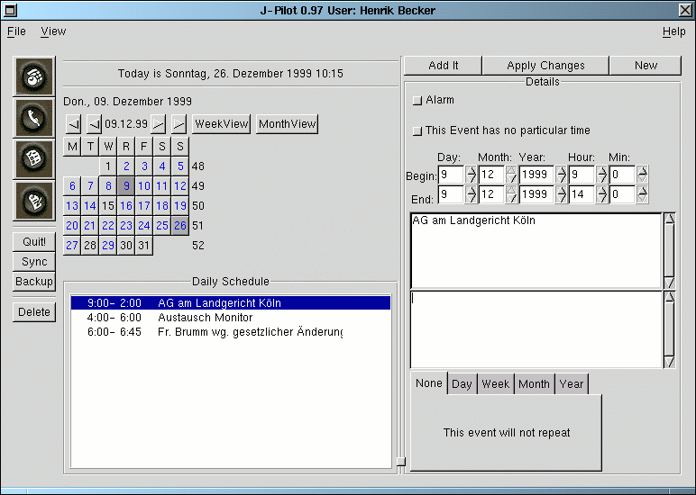

Sie gelangen in das Kalenderfenster entweder durch einen Klick
auf das Kalendersymbol, welches Sie schon von Ihrem PalmPilot
kennen, oder durch das Drücke der Tatse F1. Darüber
hinaus können Sie auch auf ,,File`` klicken und dann
,,Datebook`` anwählen.

Sie können die Tage der einzelnen jeweils angezeigten Monate durchsuchen, indem Sie den gewünschten Tag in der Button-Liste im Fenster anklicken.
Oberhalb der Tage-Liste befinden sich eine Datumsangabe und vier Richtungs-Buttons. Die inneren beiden dieser 4 Buttons blättern jeweils einen Monat vor oder zurück, die äußeren beiden tun selbiges bezogen auf ein Jahr.
TIP: Um zum aktuellen Tage zurück zu kehren, klicken Sie einfach ein weiteres Mal auf den Kalender-Button oben links.
Unterhalb des Sync- und Backup-Buttons befinden sich zwei Button, mit denen Sie eine Wochen- sowie eine Monatsübersicht aufrufen können. Ein Mausklick auf einen der beiden bringt die entsprechende Übersicht zu Gesicht.
Um einen Termin zu löschen, wählen Sie diesen an, so daß er farbig markiert ist, und klicken Sie dann auf den Button ,,Delete`` am linken Fensterrand.
Wenn Sie einen neuen Termin hinzufügen wollen, gehen Sie folgendermaßen vor:
1. Im Fenster rechts oben finden Sie einen Button, der mit ,,New`` beschriftet ist. Klicken Sie diesen an. Darauf hin werden die Einträge unterhalb dieses Buttons gelöscht und das Datum den aktuellen, links im Fenster angezeigten Tag angepaßt.
2. Füllen Sie die Einzelheiten aus, die wichtig sind. Achten Sie vor allem auf korrekte Zeiten und auf die Einstellung der möglichen Wiederholungen des Termins.
3. Drücken Sie den Button ,,Add It`` oberhalb der Einträgen neben dem Button ,,New``. Damit wird der neue Termin eingefügt und beim nächsten HotSync (vgl. auch oben Hoppla) auch auf den PalmPilot überspielt.
Beachten Sie, daß neue, noch nicht auf den PalmPilot übertragene Termine farbig markiert sind. Erst wenn eine Synchronisierung mit dem PalmPilot stattgefunden hat und damit lokale Datenbank und PalmPilot auf dem gleichen Stand sind, wird der Termin wie auch alle anderen ohne besondere Kennzeichnung dargestellt.
Einen Termin verändern Sie am schnellsten, wenn Sie ihn anwählen, die Einträge des Termins auf der rechten Seite des Fenster verändern und dann den Button ,,Apply Changes`` betätigen. Diesen finden Sie zwichen den bereits genannten Buttons ,,New`` und ,,Add It``.